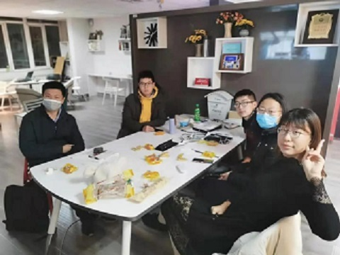

电影记

电影作为一种艺术形式已渗透在每个人的生活中，
无论是带来欢乐的喜剧片，还是让人反思的教育片，
各种各样的影片都会带给我们或多或少，或深或浅的影响。
看完《致命魔术》后， 最大的感受就是“草蛇灰线，伏脉千里”。
整个电影的基调是沉重压抑的，双方勾心斗角，互相报复，无所不用其极，
不仅葬送了别人，更葬送了自己。
辉煌的舞台灯光照耀下，整个故事却仿佛发生在冬夜：
冷露滴梦破，峭风梳骨寒。棓桐枯峥嵘，声响如哀弹。
这部电影的震撼之处还在于极大的反差，光鲜的表演，却散发着血腥的气息；
优雅的动作背后，却堆藏着无数尸体。
为了达到“化腐朽为神奇”的演出效果，不惜去践踏世间一切的道德准则，不惜去牺牲自己。
魔术既美好又残酷，它令人痴迷，一旦陷入其中，便无法自拔。
你是否希望体会体育比赛带来的热血与激情？你是否希望于真人真事中体会感动与温暖？如果是的话，《弱点》正好能满足你的需求。
一方面，我感动于陶西一家对于奥赫的包容与关心：
陶西太太不顾他人非议，执意收养奥赫，让他与自己一家人住在一起，视他为自己的儿子；
面对同学们的不解，陶西家的女儿和儿子没有疏远奥赫，而是主动帮助他、与他一起学习、娱乐。
另一方面，奥赫对于陶西一家的在意也打动了我：
当发生车祸时，他主动替奥赫的儿子挡下安全气囊的剧烈冲击，没有一丝犹豫。
奥赫和陶西一家的和谐关系提醒着我们，世界上还是有美好的事情，人与人之间还是有真挚的感情、关切存在。
正是这份关切让我感动。
《惊涛迷局》可以谈得上是一部好的商业片，却并不能谈得上是一部好的教育和社会片。
给我印象最深的，不是电影的场景，不是各种情节，反而是一个极容易忽略的细节。
在儿子制造出的游戏世界中，继父是一个权势滔天、腰缠万贯的人；
而在现实生活中，继父只是一个在外受尽讥讽嘲笑、只敢将怒火发泄于妻儿身上的修理工。
这让我不得不开始思考起了一个话题——家暴。
正像是影片中儿子所感受的那样，家暴者在被施暴者心中的形象总是会比其社会实际形象要有权利得多、可怕得多。
这是一种特殊的心理现象，也可以说是一种信息的隔阂。
